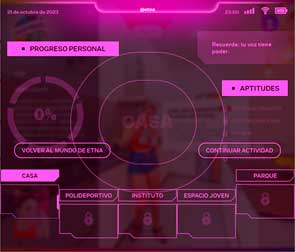

MANUAL DE INSTRUCCIONESEL MUNDO DE ETNA, BAJO PRESIÓN
EL MUNDO DE ETNA, BAJO PRESIÓN es un juego digital interactivo al que puedes jugar individualmente, en pequeños equipos o toda la clase conjuntamente. Nadie gana y todas ganamos, bueno, la que gana más es Etna, ya que el juego va de ayudarla a adquirir 5 APTITUDES personales para navegar con más destreza una emocionante y compleja etapa vital que igual te suena... la adolescencia.

¿CÓMO JUGAR? |
¿A punto? Después de introducir tu nombre de usuari@, vas a ver desde arriba el pequeño mundo de Etna, con todos sus rincones. Podrás entrar, en el orden que desees, en 5 ESPACIOS que lo conforman y ayudarla a resolver los MINIRETOS que se le presentan. Para hacerlo a veces deberás tomar decisiones, otras adivinar, reflexionar sobre un tema en concreto, resolver un juego de preguntas y respuestas, u otras cosas que no te vamos a desvelar para no hacerte más Spoilers.
¿Y cómo vas a poder hacer todo esto desde tu ordenador? Te estarás preguntando... Pues lo vas a ver todo a través de sus ojos, mediante sus gafas con Chupi Flow, por lo que vas a vivir las situaciones en 360º poniéndote en su piel.
 La manera de ayudar a Etna dentro de los miniretos es INTERACTUANDO con sus amigas. Dale
Like
a los GLOBOS, o a los botones repartidos por el espacio. ¡Ojo, que hay botones escondidos y
solo
interactuando con la peña y siguiendo los diálogos, aparecerán! Hay espacios en los que sólo con un
Like ya basta,
pero hay otros más complicados y tendrás que dar muuchos Likes. Hasta que no aparezca el botón debajo
de SIGUIENTE ACTIVIDAD,
Etna no te dará el espacio por completado.
La manera de ayudar a Etna dentro de los miniretos es INTERACTUANDO con sus amigas. Dale
Like
a los GLOBOS, o a los botones repartidos por el espacio. ¡Ojo, que hay botones escondidos y
solo
interactuando con la peña y siguiendo los diálogos, aparecerán! Hay espacios en los que sólo con un
Like ya basta,
pero hay otros más complicados y tendrás que dar muuchos Likes. Hasta que no aparezca el botón debajo
de SIGUIENTE ACTIVIDAD,
Etna no te dará el espacio por completado.
Una vez completado un espacio podrás VOLVER AL MUNDO DE ETNA para entrar al siguiente espacio y se guardaran las aptitudes.
LOS CINCO ESPACIOS |
Los espacios dónde Etna teje sus vínculos y relaciones son:
- Casa: guarida y zona de más confort.
- Polideportivo: juega a baloncesto en las tardes y el fin de semana.
- Espacio joven: pasa ratos por las tardes.
- Instituto: va durante el día.
- Parque: pasa otros ratos por las tardes y el fin de semana.
FINALIDAD DEL JUEGO |
Una vez vayas completando algunos de los miniretos, Etna irá ganando HABILIDADES y una vez adquiridas 4 habilidades y superado todo el espacio, se desbloqueará una de las cinco APTITUDES del juego. Éstas, le serán muy útiles para que su adolescencia y sus relaciones fluyan de forma favorable dentro de su nuevo mundo.

Conocimiento propio + Autoaceptación + Construir autoestima + Identificar los límites = AUTOCONOCIMIENTO

Identificar emociones + Desarrollar empatía + Tolerar la frustración + Asumir responsabilidades = GESTIÓN EMOCIONAL
Mejorar vínculos personales + Tomar decisiones+ Resolver problemas + Escuchar activamente = SOCIABILIDAD

Identificar las violencias, Identificar los roles, Respetar a los demás, Luchar contra el acoso = EMPATÍA

Comunicar asertivamente + Información sobre drogas + Identificar presión de grupo + Romper mitos = CRITERIO PROPIO
ELEMENTOS IMPORTANTES DEL JUEGO |
 No olvides leer los ENUNCIADOS de cada minireto, te ayudarán a entender de qué trata y te
darán pistas para resolverlo.
Tendrás un tiempo para completarlas. Si set te acaba el tiempo, no sufras, te daremos más, tanto como
necesites
No olvides leer los ENUNCIADOS de cada minireto, te ayudarán a entender de qué trata y te
darán pistas para resolverlo.
Tendrás un tiempo para completarlas. Si set te acaba el tiempo, no sufras, te daremos más, tanto como
necesites
 Puedes ver el PROGRESO PERSONAL adquirido haciendo clic en tu @USUARIA a
medida que vayas avanzando por los diferentes miniretos de los espacios.
Puedes ver el PROGRESO PERSONAL adquirido haciendo clic en tu @USUARIA a
medida que vayas avanzando por los diferentes miniretos de los espacios.
¡Atenci√≥n! Si elijes volver al mundo de Etna antes de terminar con un espacio por completo, perderás todas las habilidades de tu progreso y deberás volver a empezar y lidiar con el baj√≥n de Etna. üò± ¡Con Etna, es ‚Äútodo o nada‚Äù!
 Si tienes dudas sobre un minireto, consulta a la persona que supervisa la actividad. También puedes
PREGUNTAR A ETNA, que te acompañará siempre durante el juego.
Aunque… si le preguntas… quizá te responda algo que no tiene nada que ver (careta)… En fin, Etna es así, ya la
irás conociendo…
Si tienes dudas sobre un minireto, consulta a la persona que supervisa la actividad. También puedes
PREGUNTAR A ETNA, que te acompañará siempre durante el juego.
Aunque… si le preguntas… quizá te responda algo que no tiene nada que ver (careta)… En fin, Etna es así, ya la
irás conociendo…
Etna nos pide que te recuerde que algunas actividades pueden despertar sensibilidades y que es importante el respeto y tolerancia hacia los temas tratados en relación con vuestras compañeras.
¿Estás preparada? Pues aterriza en su mundo en 3, 2, 1.... ¡YA!
LOS ABURRIDOS DETALLES TÉCNICOS |
 Las escenas son en 360º. Arrastra la imagen con el ratón o con las flechas de navegación del teclado. Haz Zoom in o Zoom out con la rueda del mouse para acercarte a los elementos y leer bien los textos cuando los globos sean pequeños.
Necesitas buena conexión a internet y reproductor de sonido para participar en esta experiencia.
Si vieras demasiado grandes, solapados (como la imagen) o desproporcionados los elementos del minireto, prueba cambiando el zoom, a veces… está mal ajustado
Algunos miniretos pueden requerir del uso de un teléfono móvil con la aplicación Youtube y unas gafas de Realidad Virtual. La cosa va así:
1. Habilita el giro automático del teléfono
2. Cuando aparezca, en dos ocasiones, escanea el código QR con tu teléfono móvil
3. En los ajustes de la app de Youtube, selecciona la Mayor Calidad Posible (mínimo 1080p)
4. Dale al Play y justo después, haz clic en el botón de las gafas VR.
TÉRMINOS IMPORTANTES |
- ETNA: Es la protagonista de este juego. A través de las Gafas Chupi Flow vamos a adentrarnos a su mundo y ayudarla a adquirir aptitudes y habilidades en su nuevo pueblo.
- EL MUNDO DE ETNA: Cada una tenemos nuestro pequeño mundo, compuesto por los sitios que frecuentamos. Etna tiene este, con estos espacios.
- ESPACIOS: Se describen en el Manual, son los que conforman el Mundo de Etna.
- MINIRETOS: En cada espacio se plantean diferentes situaciones. En estas, juntamente con Etna y tu equipo, deberéis superar los miniretos que se planetean.
- HABILIDADES: En cada espacio, en cuatro de los miniretos que se presentan, obtendrás una habilidad.
- APTITUDES: Al acabar todos los miniretos de cada espacio, desbloquearás una Aptitud. Estas habilidades y aptitudes adquiridas, os ayudaran a Etna y a ti a estar mejor con vosotras mismas y a construir relaciones más sanas.
- INTERACTUAR: En las escenas, se puede clicar en diferentes sitios. Algunas veces, será dando Likes y otras simplemente seguirás conversaciones.
- GLOBOS: La mayor parte de interactuaciones del juego son los Globos. ¡Ojo! No siempre, a veces, tendrás que interactuar con otros elementos, pero tranqui, que es bastante intuitivo...
- SIGUIENTE MINIRETO: En cada escena hay que conseguir superar los miniretos propuestos. Al hacerlo, darás un Like. Una vez superado el minireto, o los miniretos (a veces hay varios), aparecerá un botón abajo a la derecha que te permitirá cambiar de escena y enfrentarte a nuevos miniretos.
- @USUARIA: En la parte superior derecha, en las escenas, hay tu usuaria. Haciendo clic en ella, accederás al espacio de Progreso Personal.
- PROGRESO PERSONAL: Aquí hay toda la info de tu progreso en el juego: el tiempo que llevas en este espacio, el porcentaje del juego conseguido, las aptitudes y habilidades desbloqueadas, etc.
- CONTINUAR MINIRETO: Una vez consultado el espacio personal, puedes seguir con los miniretos en este botón en la derecha
- VOLVER AL MUNDO DE ETNA: Si quisieras abandonar y volver al Mundo de Etna, podrías hacerlo mediante este botón en la izquierda, pero ¡Ojo!, si sales sin haber acabado el espacio, tendrás que volver a enfrentarte a los miniretos de este espacio...
- PREGUNTAR A ETNA: Etna te estará acompañando todo el rato mientras te encuentres en las situaciones que te plantea. Siempre que quieras, puedes consultarle haciendo clic encima de ella... Te avisamos... Sus respuestas, a veces, son un poco... Random :)
- ENUNCIADOS: A la izquierda, cuando estés en los espacios, tendrás los enunciados que te explicarán qué hacer en los miniretos. No olvides leerlos, a veces te darán informacines clave!
NOTA PARA EL PROFESORADO |
GUIA DE ORIENTACIONES PEDAGÓGICAS
https://noupunt.com/apps/pds/bajo-presion/guia-pedagogica
Antes de la implementación del programa, se recomienda descargar la guía de orientaciones pedagógicas. En la guía se presentan los objetivos del programa, la ficha técnica y recomendaciones para sacar el máximo de partido de cada uno de los miniretos de la exposición virtual.
ACCESSO AL FORMATO “FREESTYLE”
https://noupunt.com/apps/pds/bajo-presion/?access=freestyle
Aunque la exposición virtual está pensada para visitarla y interactuar con los diferentes escenarios de forma secuencial, el formato “Freestyle” nos permite acceder a los miniretos directamente, sin ganar habilidades ni poder desbloquear aptitudes. Se ha creado esta modalidad de juego para poder trabajar en una sesión los temas seleccionados o repetir algún de los miniretos. Abajo a la derecha encontrareis un botón que permite volver al menú principal.